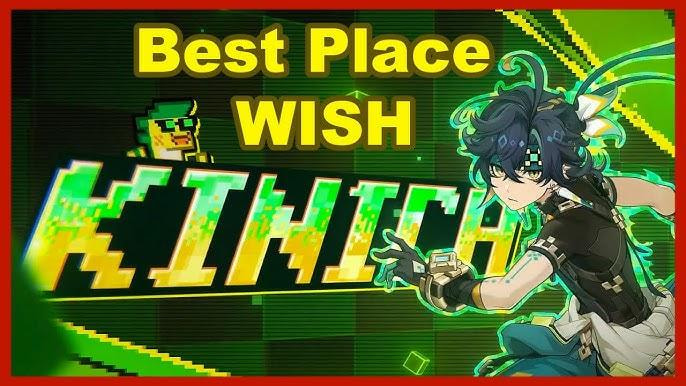

5 Lokasi Wish Kinich Paling Sakral di Genshin Impact: Tingkatkan Keberuntungan, Bawa Pulang Dendro Boy Natlan!

Genshin Impact terus menghadirkan karakter-karakter baru yang memikat hati para Traveler, dan salah satu yang paling dinantikan adalah Kinich, sang Dendro Claymore DPS dari Natlan. Selain gameplay-nya yang unik dan kuat, Kinich juga memiliki latar belakang cerita yang dalam dan penuh makna. Banyak pemain percaya bahwa melakukan wish di lokasi tertentu yang memiliki hubungan erat dengan lore Kinich dapat meningkatkan keberuntungan dan membuat pengalaman mendapatkan karakter ini menjadi lebih berkesan.
Artikel ini akan membahas secara mendalam lima lokasi wish terbaik di Natlan yang diyakini membawa keberuntungan ekstra untuk mendapatkan Kinich, lengkap dengan latar belakang lore, panduan lokasi, serta tips ritual wish agar momenmu semakin sakral dan berkesan.
Mengenal Kinich: Sang Pemburu Saurian dari Natlan
Kinich adalah karakter bintang 5 yang diperkenalkan sebagai salah satu wajah baru dari region Natlan, sebuah negara yang terkenal dengan budaya peperangan dan hubungan erat antara manusia dan Saurian (makhluk mirip naga purba). Ia merupakan anggota inti dari suku Scions of the Canopy, kelompok pemburu Saurian yang sangat terampil dan berani.
Latar Belakang Kinich
Kinich memiliki masa kecil yang penuh perjuangan. Ia tumbuh dalam keluarga yang penuh kekerasan, dengan ayah yang sering menyiksa dirinya dan ibunya. Pada ulang tahunnya yang ke-7, sebuah kejadian tragis terjadi ketika ayahnya jatuh dari tebing dalam sebuah pertarungan, memberinya kebebasan yang selama ini diidamkan namun juga kesendirian yang mendalam.
Setelah peristiwa itu, Kinich dibimbing oleh seorang tetua suku yang mengajarinya berbagai keterampilan bertahan hidup dan berburu. Ia menjadi pemburu Saurian yang sangat terampil, dipercaya untuk menjalankan misi berbahaya, dan dikenal sebagai sosok yang tangguh serta penuh perhitungan.
Keunikan Kinich
- Elemen: Dendro
- Senjata: Claymore
- Role: DPS utama dengan kemampuan AoE yang kuat dan mobilitas tinggi berkat grappling hook
- Konstelasi: Chimaera Alebriius, terinspirasi dari alebrije, patung seni rakyat berwarna cerah dari Meksiko.
Mengapa Lokasi Wish Penting?
Secara mekanik, sistem gacha Genshin Impact menggunakan algoritma acak yang tidak dipengaruhi oleh lokasi wish. Namun, komunitas percaya bahwa melakukan wish di tempat yang memiliki hubungan lore dengan karakter dapat meningkatkan keberuntungan secara spiritual dan membuat momen wish menjadi lebih bermakna.
Selain itu, ritual wish di lokasi sakral juga menjadi cara bagi pemain untuk merayakan kedatangan karakter baru, menguatkan koneksi dengan dunia Teyvat, dan menambah keseruan dalam proses mendapatkan karakter impian.
Top 5 Lokasi Wish Kinich Paling Sakral di Natlan
1. Puncak Pohon Scions of the Canopy
Lore & Atmosfer:
Kinich adalah anggota inti suku Scions of the Canopy yang dikenal gemar olahraga ekstrem dan suka menghabiskan waktu di ketinggian. Puncak pohon di wilayah ini menjadi tempat favoritnya untuk beristirahat dan mengamati sekeliling. Lokasi ini melambangkan kebebasan dan ketenangan yang sangat berarti bagi Kinich.
Panduan Lokasi:
Pergi ke wilayah Scions of the Canopy di Natlan.
Cari pohon tertinggi di area tersebut dan panjat hingga puncak.
Lakukan wish sambil menikmati pemandangan alam Natlan yang luas.
Mengapa di sini?
Suasana tenang dan panorama alam yang indah dipercaya membawa energi positif dan keberuntungan saat melakukan wish.
2. Di Samping Sinchi, Rekan Pemburu Kinich
Lore & Atmosfer:
Sinchi adalah pemburu dari suku Huitztlan, rekan dekat Kinich yang sering ditemui di Scions of the Canopy. Ia merepresentasikan persahabatan, keberanian, dan ikatan kuat antar anggota suku.
Panduan Lokasi:
Temukan Sinchi di wilayah Scions of the Canopy, dekat Wayob Huitztlan.
Berdirilah di sampingnya dan lakukan wish.
Mengapa di sini?
Banyak pemain percaya kehadiran Sinchi sebagai “pemancing” keberuntungan, terutama bagi yang ingin wish bersama teman atau komunitas.
3. Stadion Sacred Flames: Arena Turnamen Kinich
Lore & Atmosfer:
Stadion Sacred Flames adalah arena turnamen legendaris di Natlan tempat Kinich pernah bertarung dan menunjukkan kehebatannya. Lokasi ini penuh dengan semangat juang dan energi api yang membara.
Panduan Lokasi:
Kunjungi Basin of Unnumbered Flames dan temukan Stadion Sacred Flames.
Berdiri di tengah arena dan lakukan wish.
Mengapa di sini?
Energi dan semangat arena turnamen dipercaya dapat meningkatkan keberanian dan keberuntungan dalam wish.
4. Ujung Tebing di Atas Scions of the Canopy
Lore & Atmosfer:
Kinich dikenal sebagai petualang sejati yang suka menantang bahaya. Berdiri di ujung tebing melambangkan keberanian dan semangat petualangan yang menjadi ciri khasnya.
Panduan Lokasi:
Teleport ke dataran tinggi di atas Scions of the Canopy.
Cari tebing yang menghadap ke lembah luas.
Lakukan wish sambil merasakan adrenalin dan kebebasan.
Mengapa di sini?
Sensasi adrenalin dan keberanian dipercaya dapat memicu energi positif saat wish.
5. Wayob Suku Huitztlan: Tempat Suci Suku Kinich
Lore & Atmosfer:
Wayob adalah entitas spiritual suku Huitztlan yang dipercaya dapat melihat masa lalu dan masa depan. Tempat ini sangat sakral dan menjadi pusat tradisi suku Kinich.
Panduan Lokasi:
Kunjungi Wayob Huitztlan di jantung Scions of the Canopy.
Lakukan ritual kecil seperti berdoa atau menyalakan lampu.
Lakukan wish dengan penuh harapan.
Mengapa di sini?
Koneksi spiritual yang kuat membuat lokasi ini sangat cocok untuk wish yang penuh makna.
Ritual Wish dan Tips dari Komunitas
- Waktu Wish: Pilih waktu pagi atau senja, sesuai waktu favorit Kinich muncul di cutscene.
- Emote dan Gesture: Duduk, menari, atau melompat sebelum wish untuk menambah keseruan.
- Makanan Favorit: Bawa makanan favorit Kinich ke party untuk “menarik” keberuntungan.
- Wish Bersama: Ajak teman untuk wish bersama di lokasi yang sama agar suasana lebih meriah.
- Abadikan Momen: Screenshot atau rekam video momen wish sebagai kenang-kenangan.
Kisah Nyata dari Komunitas
Banyak pemain membagikan kisah keberuntungan mereka setelah melakukan wish di lokasi-lokasi ini. Ada yang mendapatkan Kinich di pull pertama setelah ritual di Wayob, ada juga yang merasa lebih dekat dengan karakter setelah wish di puncak pohon. Ritual wish kini menjadi bagian dari tradisi komunitas Genshin Impact, bukan hanya soal keberuntungan, tapi juga merayakan lore dan keindahan dunia Teyvat.
Tabel Perbandingan Lokasi Wish Kinich
| Lokasi | Nilai Lore | Suasana | Akses | Kesan Unik |
|---|---|---|---|---|
| Puncak Pohon Scions | ★★★★★ | Tenang | Sedang | Pemandangan luas, nuansa damai |
| Samping Sinchi | ★★★★☆ | Hangat | Mudah | Persahabatan, komunitas |
| Stadion Sacred Flames | ★★★★★ | Enerjik | Mudah | Aura turnamen, penuh semangat |
| Ujung Tebing | ★★★★☆ | Menantang | Sedang | Petualangan, adrenalin |
| Wayob Huitztlan | ★★★★★ | Sakral | Spiritual | Penuh tradisi |
FAQ Seputar Wish Kinich
Q: Apakah lokasi wish benar-benar mempengaruhi peluang mendapatkan Kinich?
A: Secara sistem mekanik, tidak. Namun, secara pengalaman dan lore, lokasi wish dapat menambah keseruan dan makna dalam proses wish.
Q: Apakah harus melakukan ritual tertentu sebelum wish?
A: Tidak wajib, tapi ritual seperti emote atau doa membuat wish terasa lebih personal dan berkesan.
Q: Di mana lokasi favorit komunitas untuk wish Kinich?
A: Wayob Huitztlan dan Puncak Pohon Scions of the Canopy adalah dua lokasi paling populer.
Mendapatkan Kinich bukan hanya soal keberuntungan, tapi juga tentang menikmati proses wish, mengenal lore, dan merayakan keindahan Natlan. Apapun hasilnya, wish di lokasi spesial akan membuat pengalamanmu lebih memorable. Jangan lupa abadikan momen wish-mu, dan semoga Kinich benar-benar pulang ke party-mu setelah ritual di tempat sakral ini!
Untuk memaksimalkan pengalamanmu dalam mendapatkan Kinich, pastikan kamu sudah menyiapkan Primogems yang cukup. Jika butuh Primogems dengan harga terjangkau dan layanan terpercaya, kamu bisa langsung Top Up Genshin Impact di Topupgim. Dengan begitu, momen wish-mu jadi lebih lancar dan menyenangkan tanpa khawatir kehabisan resource.
Selamat berburu Kinich, Dendro boy Natlan, dan semoga keberuntungan selalu menyertai setiap wish-mu di Teyvat!